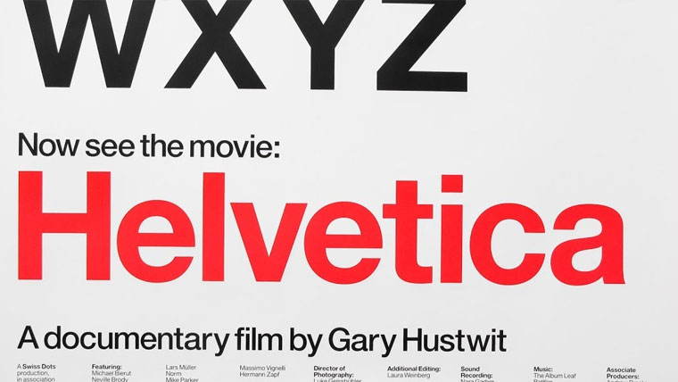
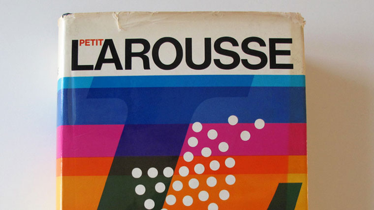
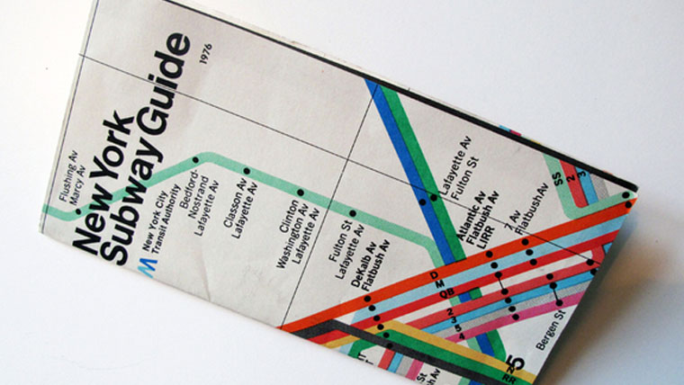

<section class="detalle-section">
    <article class="detalle">
        

        <div class="thumb-others">
            
            
        </div>

        <div class="nombre">Helvetica</div>

        <div class="descripcion">Aunque todos conocemos a la famosísima Helvetica, cabe destacar que no se llamó así en un principio. Hasta 1960 se llamaba <i>Neue Haas Grotesk</i>, pero
        fue rebautizada durante su producción comercial. Su nombre deriva del nombre en latín de Suiza: Helvetia. <br>
        Fue diseñada en 1957 por <a href="https://www.linotype.com/es/522/max-miedinger.html" target="_blank">Max Miedinger</a> y Eduard Hoffmann, como una modernización de la vieja Akzidenz Grotesk. Su fama sin precedentes ha generado una suposición de idoneidad de uso
        de esta tipografía en cualquier ámbito que pocas veces es cierta. Correcto es afirmar que esta tipografía, sin duda, es de excelente calidad y está construida con precisión, pero
        esto no la hace precisamente válida para cualquier ámbito. <br>
        Componer un texto pequeño o una señalética de aeropuerto con Helvetica no son las situaciones más ideales para el uso de esta fuente. <br>
        Además, la incorporación de Helvetica por defecto como fuentes preinstaladas en los ordenadores Mac propulsaron un uso aún más exacerbado de la tipografía, generando así un <b>boom</b>
        que ayudó a que se iniciara el fin de la moda de Helvetica.</div>
    </article>
</section>